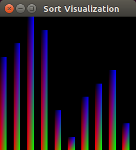
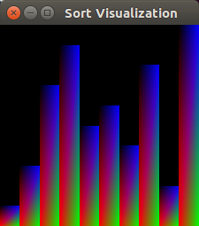
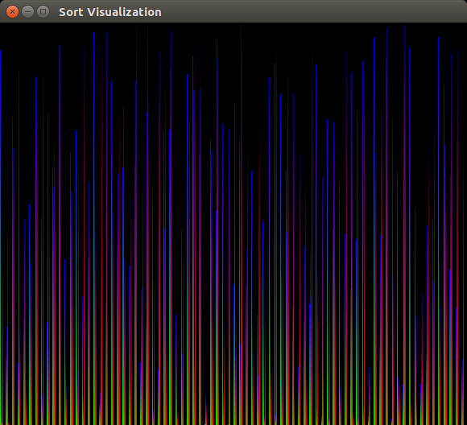

If you’ve read my
previous posts,
then you know I love python. Regardless, it has been a goal of mine to be proficient in c++. I’m not exactly sure why I’m fascinated with this language that I have no uses cases for, but I think it stems from my love of video games. C++ is used extensively by my favorite company, Blizzard Entertainment, and sees a wide range of use across the industry. In addition, it also is apart of a field that is of particular interest for me, AI. For example,
tensorflow
is implemented in c++.
With my interest in c++ in mind, I decided to write a few sorting algorithms as a way to practice using the language without doing anything too extensive. What resulted was a series of dull
challenges
which really tells you nothing about me as a programmer and if I can do anything. However, I recalled watching these
youtube videos
from when I was freshman first learning the algorithms and decided visualizing my implementations may be a way to add some spice to what was otherwise a very dull set of implementations.
Glut is a way for c++ to be able to talk to OpenGL and draw things. For installing glut I found a helpful
article
which gave me the installation commands I needed to run:
They also provide a sample program that will draw a white square on a black background.
#include "GL/freeglut.h"#include "GL/gl.h"/* display function - code from: http://fly.cc.fer.hr/~unreal/theredbook/chapter01.htmlThis is the actual usage of the OpenGL library. The following code is the same for any platform */voidrenderFunction(){glClearColor(0.0,0.0,0.0,0.0);glClear(GL_COLOR_BUFFER_BIT);glColor3f(1.0,1.0,1.0);glOrtho(-1.0,1.0,-1.0,1.0,-1.0,1.0);glBegin(GL_POLYGON);glVertex2f(-0.5,-0.5);glVertex2f(-0.5,0.5);glVertex2f(0.5,0.5);glVertex2f(0.5,-0.5);glEnd();glFlush();}/* Main method - main entry point of applicationthe freeglut library does the window creation work for us, regardless of the platform. */intmain(intargc,char**argv){glutInit(&argc,argv);glutInitDisplayMode(GLUT_SINGLE);glutInitWindowSize(500,500);glutInitWindowPosition(100,100);glutCreateWindow("OpenGL - First window demo");glutDisplayFunc(renderFunction);glutMainLoop();return0;}
With our packages and program we can now test to see if it will run. To test, input the following in your terminal. Please note, I assume you’ve named this file main.cpp in the commands below.
g++main.cpp-lGL-lGLU-lglut./a.out
Drawing in OpenGL with Glut
Now that we can draw things, we need to understand how exactly we are drawing. The first thing to notice in the sample program above, is how it draws the square where every vertex has either -0.5 or 0.5 for the x and y axis.
Figure 1: Representation of square generated in sample code for OpenGL
As you can see in figure one, source code
here,
the blue square is the square we see when running our c++ code. The black lines represent the axis and ultimately show us how we are expected to draw with this framework. -1 to 1 are the boundaries on both the x and y axis. So the vertex (-1,-1) would be the bottom left of the screen and (1,1) would be the top right.
Drawing a Frame
A frame for us is a visual representation of the array we are sorting and the progress. Therefore, before we can starting writing code we have to define the array we want to visualize. Luckily, this is fairly simple because our goal isn’t to write something super generic. Our one and only goal is to write something that visualizes the sort. WIth that in mind let’s assume an array is a set of integers ordered from 0 to n, where n is some arbitrary length greater than 0.
Please note, I’m aware that the malloc isn’t necessary but it will come into play later so please just bear with me. With our array now defined, we need a render function that will be able to draw rectangles for each and every element of the array inside of our window. These rectangles need to scale based on the size of the array.
voidrenderFunction(){glClearColor(0.0,0.0,0.0,0.0);glClear(GL_COLOR_BUFFER_BIT);glColor3f(1.0,1.0,1.0);glOrtho(-1.0,1.0,-1.0,1.0,-1.0,1.0);floatl=(float)length;floatwidthAdder=1/l;for(inti=0;i<length;++i){glBegin(GL_POLYGON);// + 1 so value of 0 has height of 1floatarrayIndexHeightRatio=2*(arr[i]+1)/l;floatwidthIndexAdder=2*i/l;floatleftX=-1+widthIndexAdder;floatrightX=leftX+widthAdder;floatbottomY=-1;floattopY=bottomY+arrayIndexHeightRatio;// bottom leftglColor4f(1,0,0,0);glVertex2f(leftX,bottomY);// bottom rightglColor4f(0,1,0,0);glVertex2f(rightX,bottomY);// top rightglColor4f(0,0,1,0);glVertex2f(rightX,topY);// top leftglColor4f(0,0,0,1);glVertex2f(leftX,topY);glEnd();}glFlush();}
Now there is a decent bit going on here, so let’s break it down. The most important thing to notice is that I’m using variables arr and length without ever having declared them or passed them into the function. The unfortunate reality here is that there is no way, that I could find, to pass a variable into the render function. Now I imagine a class would resolve this, but I used a global because I knew this code would only be used once. If I thought, for even a second, that I would use it again then I would have attempted the class approach or anything to avoid having these horrible globals.
The first set of commands is clearing the screen so we can draw on it without drawing over anything else. After that we convert the length to a float so we can divide by it without worrying about integer rounding. We then create this variable called widthAdder which is how long, widthwise, a rectangle will be. Also, please note, you could do 2/l instead which would cause the rectangles to touch as seen in figure two.


Figure 2: first image shows 1/l and second shows 2/l
We now begin looping over every element of the array to draw the rectangle that represents the given element. We use the element’s index to determine where it is located along the x axis and the actual value to determine the height. To start we call a function glBegin with an enumeration to a polygon. With every glBegin call there will always be a glEnd call that you see at the end of the loop. After the begin call we create a variable which represents the height of the index. We calculate this by taking the value and adding one, this ensures the zero value will be shown, and multiplying the result by two. This multiplication allows us to use the entire screen of negative one to one. We then divide by the length of the array to properly scale the result. You’ll notice that the +1 we used for making 0 show on the screen also set the scaling to a proper factor. The other way to resolve this would have been to divide by the length subtracted by 1.
The next variable allows us to find the starting x coordinate before subtracting by one. We take the index of the element and divide by the length. From there we multiply it by two. Once we subtract by one we will have the starting left x coordinate.
With this math completed, all we have to do is finish up our variable definitions for the four corners of the rectangle and draw out the vertices. You’ll notice that I added colors to the vertices as well so the resulting graphs would be prettier. The results of this can be seen in figure three after
randomizing the array
for an array of size 500.

Figure 3: Sample graph generated for a randomized array
Visualizing the Sort
Now we want to redraw the entire screen after every single swap (an optimization for this would be to only redraw the areas of the screen for the two rectangles that are swapped). The easiest way to do this is to write our own version of swap that will still use the std::swap function, but also call the render function.
You’ll notice that I take advantage of the horrible global and actually don’t pass it in. In addition, I’ve added an extra line usleep(delay) which pauses the execution for however many milliseconds. This makes it so we can actually see the sort happening. This function call isn’t necessarily ideal for all operating systems and using boost instead would be optimal. In addition, you’ll notice that delay is also undefined and must therefore be a global. This is the third and second to last global (length is the second).
With swapping implemented, we now need a generic way of passing our sorting algorithm to the visualizer. Luckily, c++ gives us an easy way to pass functions.
This function sets our fourth and final global, the swapping algorithm. After that, it does the exact same things from the original main function we have above, except, there is now a keyboard function and a randomize array function.
The keyboard function is called on keyboard events and takes in a few arguments. In our case we use this event to handle the escape key, 27, and s key, 115. When the escape key is pressed we quit out. When the s key is pressed, we start the sort.
voidkeyboardEvent(unsignedcharc,intx,inty){if(c==27){// exit on escape key pressedexit(0);free(arr);}elseif(c==115){// start on `s` key pressedsort(arr,length);}}
What we now have is a complete program and all we have to do is set up our main function. Say we wanted to see how quicksort looked. Then we could create a main function underneath our quicksort code from above; please note that the sorting algorithm will have to use the new swap function. Sample source code can be found
here.
And when running and after pressing s, we would get the gif seen in figure four.
Figure 4: Example gif produced from running quicksort
Conclusion
If I wanted to spend more time on this then the first thing I would do is remove all four of those horrible globals. However, besides that one element I’m pretty happy with the result. I think the visualization came out looking pretty good and it was shocking to see just how much faster quicksort really is then something like bubble sort. In addition, it was also just good experience to work in OpenGL and familiarize myself with tools that are a little outside of my comfort zone.